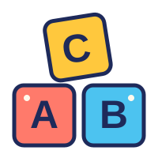

Un conflicto familiar
Mariana y Andrés deben decidir cómo actuar ante la conducta de Mateo, su hijo de diez años.

DesarrolloDesarrollo Moral
Construyendo autonomía: cómo el desarrollo moral y las competencias ciudadanas nos enseñan a decidir más allá de la multitud.
Mariana y Andrés deben decidir cómo actuar ante la conducta de Mateo, su hijo de diez años.
Mateo le quitó el celular a un compañero, lo escondió y al principio negó lo sucedido.
Andrés propone un castigo; Mariana prefiere comprender las razones y dialogar sobre cómo reparar el daño.
En una casa, Mariana y su esposo Andrés discuten sobre cómo corregir a su hijo Mateo, de diez años, luego de que la profesora del colegio los llamara para reportar que el niño le quitó el celular a un compañero durante el recreo y lo escondió en su maleta, negando lo ocurrido en un principio hasta que la profesora revisó su puesto; mientras Andrés insistía que la mejor manera de corregirlo es aplicarle un castigo severo y retirarle los videojuegos por un mes para que aprenda a respetar la autoridad y sienta el peso de la desobediencia, Mariana prefiere hablar con calma para entender las razones detrás de la conducta de su hijo, sospechando que pudo hacerlo por encajar con un grupo de amigos que lo presionaban, lo que deja abiertas decisiones posibles como imponer el castigo sin escuchar explicaciones, justificar al niño restándole importancia al incidente para evitarle una crisis, o sentarse a dialogar para establecer normas claras de restitución del daño y empatía hacia el compañero afectado..
Hagamos un analisis teorico
Elige un autor y descubre que diria de este caso
Cargando teorías…
Ya conoces el caso de Mateo y lo que dirían Freud, Piaget y Kohlberg. Ahora juega y comprueba cuánto recuerdas: esta actividad reúne el caso y las tres teorías en un solo juego.
Jugar ahora Ir al juego ↗
Ir al juego ↗